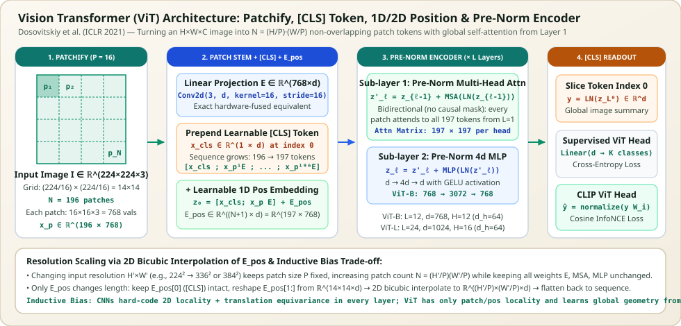
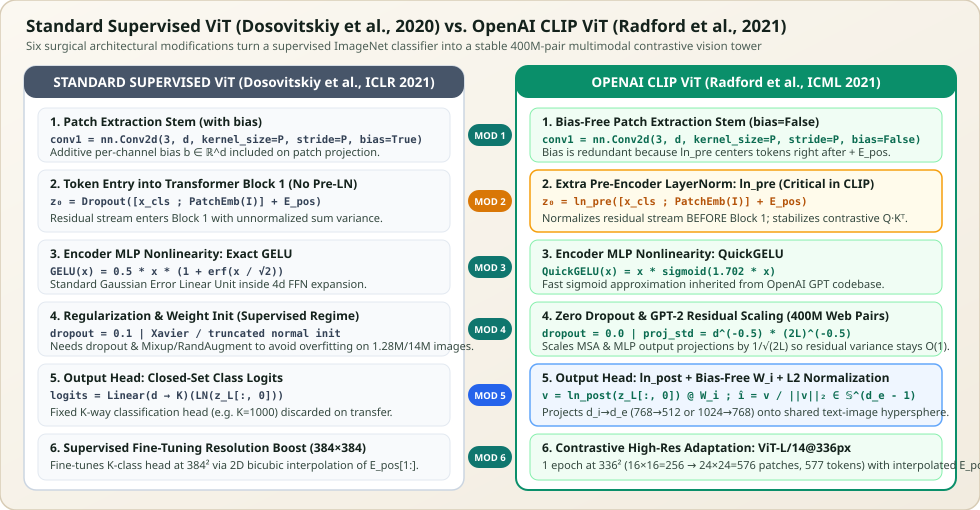

Vision Transformer (ViT): From $16 \times 16$ Patch Tokenization to CLIP's Multimodal Vision Tower
Applying self-attention directly to raw pixels scales quadratically with image area: a single $224 \times 224$ RGB image contains $50{,}176$ pixels, producing an intractable $50{,}176 \times 50{,}176 \approx 2.52 \times 10^9$ attention matrix per head per layer. Dosovitskiy et al. (2020), An Image is Worth 16x16 Words, solved this by slicing the image into $N = (H/P)(W/P)$ non-overlapping patches and feeding them into a standard Pre-Norm Transformer Encoder. Less than a year later, Radford et al. (2021) adapted ViT into the visual backbone of OpenAI CLIP through six surgical architectural modifications—most notably an extra Pre-Encoder LayerNorm (ln_pre) and a unit-hypersphere multimodal projection head—making CLIP-ViT the foundational vision encoder for modern vision–language models (LLaVA, Flamingo, SigLIP, and DALL-E 2/3).


[CLS] token readout.Chapters in This Series
| Chapter | Core Architectural Focus | Key Equations, Tensor Shapes & Implementation Details |
|---|---|---|
| 1. Vision Transformer (ViT) from First Principles | Patchify math, stride-$P$ Conv2d projection, [CLS] token, 1D/2D position embeddings, Pre-Norm Encoder blocks & CNN vs. ViT inductive biases |
$\mathbf{z}_0 = [\mathbf{x}_{\text{cls}}; \mathbf{x}_p E] + \mathbf{E}_{\text{pos}} \in \mathbb{R}^{(N+1)\times d}$, quadratic patch-size scaling ($P=32 \to 16 \to 14$), 2D bicubic interpolation of $\mathbf{E}_{\text{pos}}[1:]$ for $384^2$ fine-tuning, and mean attention distance across depth. |
| 2. The Vision Transformer (ViT) Used in CLIP | Exact diff between standard supervised ViT and OpenAI's CLIP ViT across all 6 architectural modifications | Pre-Encoder LayerNorm ln_pre before Layer 1, bias-free patch conv1, QuickGELU ($x\sigma(1.702x)$), zero dropout with $(2L)^{-1/2}$ residual scaling, ln_post + bias-free $W_i \in \mathbb{R}^{d_i \times d_e}$ + $\ell_2$ normalization, and ViT-L/14@336px. |
| 3. CLIP Architecture from First Principles | Complete dual-tower architecture: Modified ResNet-D (AttentionPool2d), Pre-Norm ViT (ln_pre), Causal [EOS] Text Transformer & Symmetric InfoNCE |
ResNet-D anti-aliased blur pooling + QKV AttentionPool2d, 12-layer causal BPE Text Tower pooled via text.argmax(dim=-1) at [EOS]=49407, clamped $\exp(t) \le 100$, and distributed $32{,}768 \times 32{,}768$ AllGather. |
| 4. SigLIP & SigLIP 2 Architecture from First Principles | Shape-Optimized ViT (SoViT-400m/14), Multihead Attention Pooling (MAP), Pairwise Sigmoid Loss & SigLIP 2 (LocCa + NaFlex) |
[CLS]-free $L=27, d=1152, d_{\text{mlp}}=4304$ backbone, 1-query cross-attention MAP readout head, $N^2$ independent binary logistic losses with $b_0 = -10$, ring-chunked $O((|\mathcal{B}|/D)^2)$ memory, and NaFlex dynamic aspect-ratio grids. |
Standard Supervised ViT vs. CLIP ViT at a Glance
Before diving into the individual chapters, the diagram below summarizes the six exact architectural differences between the original Google Brain supervised ViT (Dosovitskiy et al., 2020) and OpenAI's contrastive CLIP ViT (Radford et al., 2021):


Canonical ViT & CLIP-ViT Model Specifications
| Model Variant | Resolution & Patch Size $P$ | Sequence Length $N+1$ | Layers $L$ / Width $d$ / Heads $H$ | Pre-Block 1 Norm (ln_pre) |
Output Readout & Projection |
|---|---|---|---|---|---|
| Supervised ViT-B/16Dosovitskiy et al. (2020) | $224 \times 224$, $P=16$ | $196 + 1 = 197$ | $L=12$, $d=768$, $H=12$ | None (unnormalized sum) | $\text{LN}(\mathbf{z}_L^0) \to \text{Linear}(768 \to K)$ |
| Supervised ViT-L/16Dosovitskiy et al. (2020) | $224 \times 224$, $P=16$ | $196 + 1 = 197$ | $L=24$, $d=1024$, $H=16$ | None (unnormalized sum) | $\text{LN}(\mathbf{z}_L^0) \to \text{Linear}(1024 \to K)$ |
| Supervised ViT-H/14Dosovitskiy et al. (2020) | $224 \times 224$, $P=14$ | $256 + 1 = 257$ | $L=32$, $d=1280$, $H=16$ | None (unnormalized sum) | $\text{LN}(\mathbf{z}_L^0) \to \text{Linear}(1280 \to K)$ |
| CLIP ViT-B/32Radford et al. (2021) | $224 \times 224$, $P=32$ | $49 + 1 = 50$ | $L=12$, $d=768$, $H=12$ | Yes (ln_pre) |
$\ell_2(\text{LN}_{\text{post}}(\mathbf{z}_L^0) W_i) \in \mathbb{S}^{511}$ ($768 \to 512$) |
| CLIP ViT-B/16Radford et al. (2021) | $224 \times 224$, $P=16$ | $196 + 1 = 197$ | $L=12$, $d=768$, $H=12$ | Yes (ln_pre) |
$\ell_2(\text{LN}_{\text{post}}(\mathbf{z}_L^0) W_i) \in \mathbb{S}^{511}$ ($768 \to 512$) |
| CLIP ViT-L/14Radford et al. (2021) | $224 \times 224$, $P=14$ | $256 + 1 = 257$ | $L=24$, $d=1024$, $H=16$ | Yes (ln_pre) |
$\ell_2(\text{LN}_{\text{post}}(\mathbf{z}_L^0) W_i) \in \mathbb{S}^{767}$ ($1024 \to 768$) |
| CLIP ViT-L/14@336pxRadford et al. (2021) | $336 \times 336$, $P=14$ | $576 + 1 = 577$ | $L=24$, $d=1024$, $H=16$ | Yes (ln_pre) |
$\ell_2(\text{LN}_{\text{post}}(\mathbf{z}_L^0) W_i) \in \mathbb{S}^{767}$ ($1024 \to 768$) |
Related Series in This Blog
- Deep Learning → Architectures → CLIP (Contrastive Language–Image Pre-training) Series — Full 6-part series on CLIP's complete architecture, $12\times$ data efficiency, Figure 3 symmetric InfoNCE loss, Modified ResNet-D
AttentionPool2d, zero-shot prompt ensembling, the Modality Gap, and SigLIP & SigLIP 2 Architecture. - Deep Learning → Architectures → Transformers Series — Complete interactive guide to single-head and multi-head self-attention, Pre-Norm residual blocks, positional encodings, and Vision Transformers: Patches as Tokens.
Primary Papers & References
- Dosovitskiy et al. (2020), An Image is Worth 16x16 Words: Transformers for Image Recognition at Scale (ICLR 2021) — introduces the Vision Transformer (ViT), $16 \times 16$ patch tokenization, 1D learnable position embeddings, 2D bicubic resolution interpolation, and the inductive bias scaling laws on ImageNet-21k and JFT-300M.
- Radford et al. (2021), Learning Transferable Visual Models From Natural Language Supervision (CLIP, ICML 2021) — introduces the Pre-Norm CLIP ViT architecture with
ln_pre, bias-free patch stem,QuickGELU, and high-resolution $336 \times 336$ contrastive adaptation. - Touvron et al. (2021), Training data-efficient image transformers & distillation through attention (DeiT, ICML 2021) — shows how strong data augmentation and distillation tokens enable training ViT on ImageNet-1k alone.
- Zhai et al. (2022), Scaling Vision Transformers (CVPR 2022) — compares
[CLS]token pooling vs. Multihead Attention Pooling (MAP) and global average pooling up to ViT-G/14.